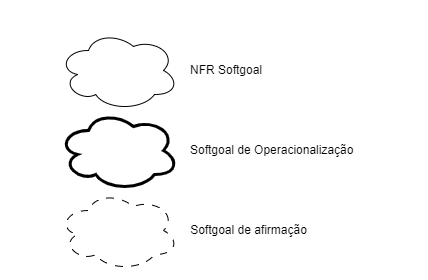
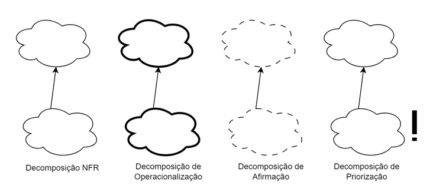
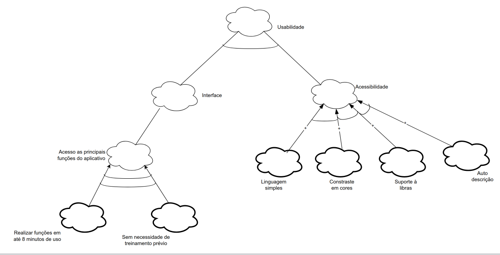
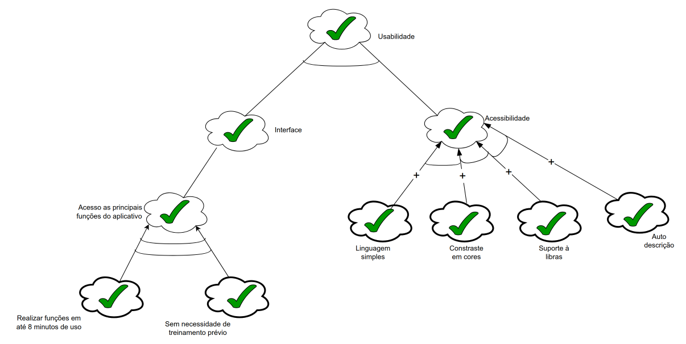
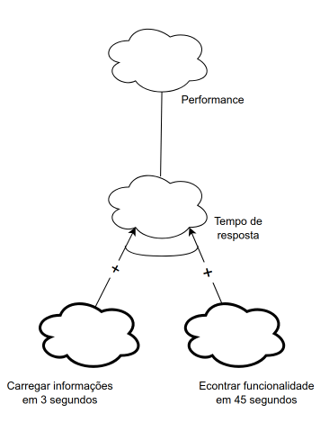
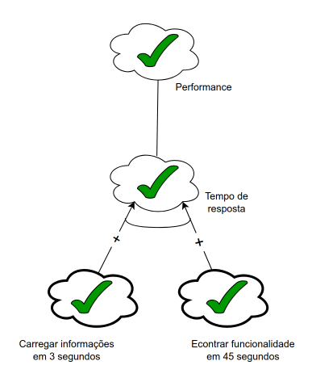
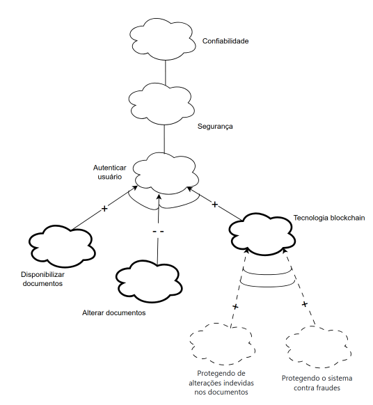
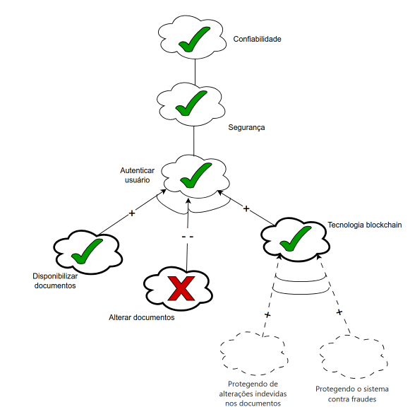

NFR - Framework
Introdução
Uma forma de representação e análise dos requisitos Não-Funcionais é o NFR Framework, o qual visa à implementação de resoluções particulares. Sendo assim, para tal, considera-se as características gerais do sistema em questão e de seu domínio. No NFR Framework, faz-se o uso do modelo de Softgoal Interdependency Graph (SIG).
Participantes
A seguir temos a tabela 1, onde indica todos os participantes da elaboração dos cenários.
Tabela 1: Participantes
| Nome | quais etapas participou | Data |
|---|---|---|
| Camila Silva | Elaborou o Cartão de especificação do NFR25 e colaborou na confecção do grafo SIG | 17/10/2025 |
| Geovanna Alves | Elaborou o Cartão de especificação do NFR54 e colaborou na confecção do grafo SIG | 17/10/2025 |
| Lara Souza | Elaborou o Cartão de especificação do NFR03 e colaborou na confecção do grafo SIG | 17/10/2025 |
| Luisa de Souza | Elaborou o Cartão de especificação do NFR40 e colaborou na confecção do grafo SIG | 17/10/2025 |
| Pedro Henrique | Elaborou o Cartão de especificação do NFR24 e colaborou na confecção do grafo SIG | 17/10/2025 |
| Yan Matheus | Elaborou o Cartão de especificação do NFR26 e colaborou na confecção do grafo SIG | 17/10/2025 |
Autor: Yan Matheus
Softgoal Interdependency Graph
O Softgoal Interdependency Graph (SIG) é uma forma de visualização do funcionamento do NFR Framework. Dessa forma, trata-se de um gráfico que registra os posicionamentos da equipe de desenvolvimento acerca dos softgoals e explicita suas interdependências de forma gráfica e concisa[1].
Tipos de Softgoal
Para a compreensão do SIG, é inexorável discernir a definição de NFR Softgoal: um objetivo que não é explicitamente definido e seus critérios de satisfação são imprecisos. Sendo assim, um softgoal é uma característica abstrata que está sujeita à vistoria, ou seja, postula-se posteriormente o destino de um determinado softgoal. Além disso, os softgoals podem ser operacionalizados, nesse caso, tomam uma forma concreta. Portanto, entende-se como funcionalidades. Por fim, há os softgoals de afirmação, os quais são escritos em linguagem natural e se tratam de registros adicionais e argumentativos, os quais podem ser incrementados ao modelo[1]. Os tipos de softgoal estão ilustrados na Figura 1.
Figura 1 - Tipos de Softgoal

Fonte: (SILVA, 2019)
Interdependências
As interdependências são definições para as associações que ocorrem entre softgoals. Tais são divididas em decomposições e contribuições:
Decomposições
As decomposições podem ocorrer em todos os níveis de abstração: Softgoals de NFR, de Operacionalização e de Afirmação. Nas três primeiras decomposições, os softgoals são subdivididos em softgoals especificados (SILVA, 2019)[1]. Os quatro tipos estão explicitados na figura 2.
- Decomposição NFR: ajuda a dividir vicissitudes primordiais em partes menores, o que reduz as ambiguidades e facilita a priorização.
- Decomposição de Operacionalização: tem por finalidade refinar uma solução geral em soluções particulares.
- Decomposição de Afirmação: serve como afirmação ou negação de justificativas específicas do projeto.
- Decomposição de Priorização: trata-se de uma decomposição especial, na qual o softgoal é refinado em outro softgoal de mesmo tipo e tópico. No entanto, associa-se uma prioridade.
Figura 2 - Tipos de Decomposição

Fonte: (SILVA, 2019)
Contribuições
Num NFR Framework, os softgoals se especializam cada vez mais. Por conseguinte, o um softgoal derivado de outro pode contribuir de forma integral ou truncada, e também de forma positiva ou negativa, para o softgoal do qual ele derivou. Portanto, listar-se-á os tipos de contribuição[2]:
- AND: se os softgoals derivados forem satisfeitos, o softgoal primordial também será.
- OR: se algum dos softgoals derivados forem satisfeitos, o softgoal primordial também será.
- MAKE(++): um softgoal originado contribui de forma plenamente positiva, logo o softgoal original também será satisfeito.
- BREAK(--): um softgoal originado contribui de forma plenamente negativa, logo o softgoal original será negado.
- HELP(+): um softgoal originado realiza uma contribuição restritamente positiva, o que reflete da mesma forma e na mesma intensidade no softgoal primordial.
- HURT(-): um softgoal originado realiza uma contribuição restritamente negativa, o que reflete da mesma forma e na mesma intensidade no softgoal primordial.
- UNKNOWN(?): contribuição incógnita.
- EQUALS: relação direta entre as satisfações do softgoal derivado e a do primordial.
- SOME: a forma de contribuição é conhecida, no entanto, a intensidade dessa contribuição é desconhecida.
Propagação de Impactos
A propagação de impactos no NFR Framework envolve a identificação das relações de dependência entre os requisitos não funcionais, bem como a análise de como uma mudança em um requisito pode afetar outros requisitos relacionados. Isso requer uma compreensão clara das interações entre os requisitos, bem como a capacidade de avaliar as prioridades e trade-offs entre eles. Ao considerar a propagação de impactos, os engenheiros de requisitos podem tomar decisões informadas sobre mudanças e gerenciar os possíveis efeitos colaterais de forma eficaz. A seguir são apresentados os tipos de softgoals de impacto e suas respectivas notações[2]:
- ✓ (satisfeito): Indica que um requisito não funcional contribui positivamente para a satisfação de outro requisito.
- 𝒲+ (fracamente satisfeito): ndica uma relação de impacto positiva, mas menos forte do que a notação ✓.
- X (negado): Indica que um requisito não funcional afeta negativamente outro requisito, negando ou contradizendo sua realização.
- 𝒲- (fracamente negado): Similar à notação X, mas com uma relação de negação mais fraca.
- 🗲 (conflitante): Indica uma relação de conflito entre requisitos não funcionais. Isso significa que os requisitos possuem características positivas e negativas.
- u (indeterminado): Uma relação indeterminada ou desconhecida entre requisitos não funcionais. Isso ocorre quando não há informações suficientes para determinar o impacto de um requisito em outro.
Metodologia
Os frameworks foram separados por temas, esses temas foram divididos em três para limitar o escopo aqui trabalhado. Após isso, fez-se uma introspecção para a construção do SIG a partir dos tópicos gerais definidos, a fim de fazer relações com os Requisitos Não-Funcionais da Tabela 12, após isso, fez-se o uma revisão na literatura e foi feita a validação do SIG confeccionado. A plataforma utilizada para a elaboração foi o Draw.io.
Requisitos Não-Funcionais
A Tabela 2 a seguir lista os Requisitos Não-Funcionais utilizados para a criação do NFR Framework.
| ID | Descrição |
|---|---|
| RQ03 | O aplicativo deve ter uma tecnologia blockchain que é usada para a autenticação e disponibilização de documentos. |
| RQ24 | O usuário deve ser capaz de realizar as principais funções do aplicativo (cadastro, login, busca, e envio de dados) em até 8 minutos de uso, sem necessidade de treinamento prévio. |
| RQ25 | O aplicativo deve ter uma linguagem simples e adequada ao usuário (sem termos técnicos). |
| RQ26 | O aplicativo deve carregar suas informações em no máximo 3 segundos. |
| RQ40 | O aplicativo deve ser acessível (contraste em cores, suporte à Libras e auto-descrição). |
| RQ54 | O aplicativo deve ter a possibilidade de encontrar qualquer funcionalidade desejada em até 45 segundos. |
Tabela 2 - Requisitos Não-Funcionais
Fonte: Yan Matheus
Cartões de Especificação
Na tabela 3, está apresentado o cartão de especificação do Requisito Não Funcional (RNF) associados ao NFR Framework de Segurança, com foco na Tecnologia blockchain para autenticação e disponubilização de documentos.
| Itens | Descrição |
|---|---|
| RNF | O aplicativo deve ter uma tecnologia blockchain que é usada para a autenticação e disponibilização de documentos. |
| Rastriabilidade | RQ03 |
| Classificação | Segurança (S) |
| Descrição | O requisito define que aplicativo deve ter tecnologia blockchain para autenticação e diponibilização de documentos ,garantindo ratreabiliade e segurança dos dados. |
| Justificativa | O uso da tecnologia blockchain garante a segurança dos dados ,reduzindo a perda de dados. |
| Critério de Aceitação | O sistema deve realizar autenticação e disponibilização de documentos via blockchain,em um tempo médio garantindo a integridade dos dados. |
| Dependências | integração com serviços de blockchain, módulo de autenticação de usuários, e infraestrutura de armazenamento de documentos. |
| Prioridade | Alta |
| Conflitos | Nenhum |
Tabela 3: Tecnologia blockchain para autenticação e disponubilização de documentos
Autor: Lara Souza Mota
Tabela 4, está apresentado o cartão de especificação do Requisito Não Funcional (RNF) associados ao NFR Framework de Usabilidade, com foco no tempo para realizar funções principais.
| Itens | Descrição |
|---|---|
| RNF | O usuário deve ser capaz de realizar as principais funções do aplicativo (cadastro, login, busca, e envio de dados) em até 8 minutos de uso, sem necessidade de treinamento prévio. |
| Rastreabilidade | RQ24 |
| Classificação | Usabilidade (U) |
| Descrição | O requisito estipula que um novo usuário deve conseguir executar as tarefas essenciais da aplicação — como se cadastrar, fazer login, buscar informações e enviar dados — em um tempo máximo de 8 minutos, sem precisar de qualquer guia ou tutorial. |
| Justificativa | Garantir uma curva de aprendizado baixa e uma primeira experiência positiva, aumentando a taxa de adoção e a satisfação do usuário ao permitir que ele utilize as funcionalidades chave de forma rápida e intuitiva. |
| Critério de Aceitação | Durante os testes de usabilidade, pelo menos 95% dos usuários de teste devem ser capazes de completar o fluxo de cadastro, login, busca e envio de dados com sucesso em menos de 8 minutos, sem assistência externa. |
| Dependências | Design de interface (UI) e experiência do usuário (UX) claros e intuitivos, fluxo de navegação simplificado e tempo de resposta do sistema para cada ação. |
| Prioridade | Alta |
| Conflitos | Nenhum |
Tabela 4: Tempo para realizar funções principais
Autor: Pedro Henrique
A tabela 5, está apresentado o cartão de especificação do Requisito Não Funcional (RNF) associados ao NFR Framework de Usabilidade, com foco na linguagem adequada ao usuário.
| Itens | Descrição |
|---|---|
| RNF | O aplicativo deve ter uma linguagem simples e adequada ao usuário (sem termos técnicos). |
| Rastreabilidade | RQ25 |
| Classificação | Usabilidade (U) |
| Descrição | O requisito define que o aplicativo deve usar uma linguagem clara, acessível e adequada ao perfil dos usuários, evitando termos técnicos complexos e promovendo uma comunicação eficiente em todos os textos de interface. |
| Justificativa | Uma linguagem simples facilita a compreensão das funcionalidades e conteúdos pelo usuário, melhorando a experiência de uso, reduzindo o tempo de aprendizado, dúvidas e erros. |
| Critério de Aceitação | Todas as mensagens, rótulos, botões e textos de ajuda do sistema devem usar vocabulário cotidiano e frases diretas, validado por uma análise de adequação ao público-alvo, garantindo que nenhum termo técnico de domínio de software seja usado sem explicação. |
| Dependências | Escopo de conteúdo e textos da interface, Design de Experiência do Usuário (UX Writing). |
| Prioridade | Alta |
| Conflitos | Nenhum |
Tabela 5: Linguagem adequada ao usuário
Autor: Camila Silva
A tabela 6, está apresentado o cartão de especificação do Requisito Não Funcional (RNF) associados ao NFR Framework de Performace, com foco em carregar informações em 3 segundos.
| Itens | Descrição |
|---|---|
| RNF | O aplicativo deve carregar suas informações em no máximo 3 segundos. |
| Rastreabilidade | RQ26 |
| Classificação | Performance (P) |
| Descrição | O requisito define que o aplicativo deve possibilitar ao estudante carregar qualquer informação desejada em um tempo máximo de 3 segundos, garantindo eficiência na navegação. |
| Justificativa | Facilitar o uso e reduzir o tempo de aprendizado, melhorando a experiência do usuário e a eficiência na interação com o aplicativo. |
| Critério de Aceitação | O sistema deve oferecer um rápido carregamento de informações principais em até 3 segundos. |
| Dependências | Infraestrutura de backend e banco de dados, otimização de requisições, arquitetura de cache e CDN, desempenho dos serviços externos. |
| Prioridade | Alta |
| Conflitos | Nenhum |
Tabela 6: Carregar informações em 3 segundos
Autor: Yan Matheus
A tabela 7, está apresentados o cartão de especificação do Requisito Não Funcional (RNF) associados ao NFR Framework de Usabilidade, com foco em acessibilidade e inclusão digital.
| Itens | Descrição |
|---|---|
| RNF | O aplicativo deve ser acessível, oferecendo contraste adequado de cores, suporte à tradução em Libras e auto-descrição para pessoas com deficiência visual. |
| Rastreabilidade | RQ40 |
| Classificação | Usabilidade (U) |
| Descrição | O requisito estabelece que o aplicativo deve seguir boas práticas de acessibilidade, garantindo contraste de cores apropriado, suporte à Libras e recursos de auto-descrição para usuários com deficiência visual. |
| Justificativa | Promover a inclusão digital e assegurar o cumprimento das normas de acessibilidade, conforme a Lei Brasileira de Inclusão (Lei nº 13.146/2015) e as diretrizes da WCAG 2.1. |
| Critério de Aceitação | O sistema deve apresentar contraste visual adequado, suporte a tradução em Libras e recursos de leitura ou auto-descrição para pessoas com deficiência visual. |
| Dependências | Design de interface acessível, recursos de tradução em Libras, compatibilidade com tecnologias assistivas e testes de acessibilidade. |
| Prioridade | Alta |
| Conflitos | Nenhum |
Tabela 7: Acessibilidade e inclusão digital
Autor: Luísa de Souza
A tabela 8, está apresentado o cartão de especificação do Requisito Não Funcional (RNF) associados ao NFR Framework de Performance, com foco no tempo de localização de funcionalidades.
| Itens | Descrição |
|---|---|
| RNF | O aplicativo deve ter a possibilidade de encontrar qualquer funcionalidade desejada em até 45 segundos. |
| Rastriabilidade | RQ54 |
| Classificação | Performance (P) |
| Descrição | O requisito define que o aplicativo deve possibilitar ao usuário localizar qualquer funcionalidade desejada em um tempo máximo de 45 segundos, garantindo eficiência na navegação. |
| Justificativa | Facilitar o uso e reduzir o tempo de aprendizado, melhorando a experiência do usuário e a eficiência na interação com o aplicativo. |
| Critério de Aceitação | O sistema deve oferecer navegação intuitiva, menus organizados e mecanismos de busca eficientes que permitam ao usuário localizar rapidamente qualquer funcionalidade. |
| Dependências | Design de interface intuitiva, estrutura hierárquica de menus, mecanismos de busca eficientes e tempo de resposta do sistema. |
| Prioridade | Média |
| Conflitos | Nenhum |
Tabela 8: Tempo de localização de funcionalidades
Autor: Geovanna Alves
NFR 01 - Usabilidade
Os Requisitos utilizados para a confecção da Figura 3 estão presentes na Tabela 8:
Figura 3 - Usabilidade

Análise confiabilidade
Figura 4 - Análise diagrama - Usabilidade

Requisitos Não-Funcionais - Usabilidade
Na Tabela 8, estão listados os RNF presentes no NFR Famework de Usabilidade :
Tabela 8 - Requisitos Não-Funcionais 1
| RNF (Fonte) | Descrição | Classificação |
|---|---|---|
| RQ24 | O usuário deve ser capaz de realizar as principais funções do aplicativo (cadastro, login, busca, e envio de dados) em até 8 minutos de uso, sem necessidade de treinamento prévio. | Usabilidade |
| RQ25 | O aplicativo deve ter uma linguagem simples e adequada ao usuário (sem termos técnicos). | Usabilidade |
| RQ40 | O aplicativo deve ser acessível (contraste em cores, suporte à Libras e auto-descrição). | Usabilidade |
Fonte: Yan Matheus
NFR 02 - Performance
Os Requisitos utilizados para a confecção da Figura 4 estão presentes na Tabela 9:
igura 5 - Performance

Análise confiabilidade 1
Figura 5 - Análise diagrama - Perfomance

Requisitos Não-Funcionais - Performance
Na Tabela 9, estão listados os RNF presentes no NFR Famework de Usabilidade :
Tabela 9 - Requisitos Não-Funcionais 2
| RNF (Fonte) | Descrição | Classificação |
|---|---|---|
| RQ26 | O aplicativo deve carregar suas informações em no máximo 3 segundos. | Performance |
| RQ54 | O aplicativo deve ter a possibilidade de encontrar qualquer funcionalidade desejada em até 45 segundos. | Performance |
Fonte: Yan Matheus
NFR 03 - Segurança
Os Requisitos utilizados para a confecção da Figura 6 estão presentes na Tabela 10:
Figura 5 - Segurança

Análise confiabilidade 2
Figura 6 - Análise diagrama - Segurança

Requisitos Não-Funcionais - Segurança
Na Tabela 10, estão listados os RNF presentes no NFR Famework de Usabilidade :
Tabela 10 - Requisitos Não-Funcionais 3
| RNF (Fonte) | Descrição | Classificação |
|---|---|---|
| RQ03 | O aplicativo deve ter uma tecnologia blockchain que é usada para a autenticação e disponibilização de documentos. | Segurança |
Fonte: Yan Matheus
Gravação
Participantes 1
A seguir temos a tabela 11, onde indica todos os participantes da sessão NFR Framework, o horário e local da aplicação da técnica.
Tabela 11: Participantes NFR Framwork
| Nome | Data |
|---|---|
| Camila Silva | 17/10/2025 |
| Geovanna Alves | 17/10/2025 |
| Lara Souza | 17/10/2025 |
| Luísa de Souza | 17/10/2025 |
| Yan Matheus | 17/10/2025 |
Autor: Yan Matheus
Video 1
Agradecimentos
Referências Bibliográficas
1. SILVA, Reinaldo Antônio. NFR4ES: Um Catálogo de Requisitos Não-Funcionais para Sistemas Embarcados. Centro de Informática UFPE, Recife, 2019. Disponível em: https://repositorio.ufpe.br/handle/123456789/34150. Acesso em: 19 out. 2025.
2.CHUNG, L., NIXON, B. A., YU, E., MYLOPOULOS, J. Non-functional requirementsin software engineering. Springer Science & Business Media: [S.l.], 2000. v. 5. Acesso em: 19 out. 2025.
3. Melo, Arthur. NFR Framework. Repositório da disciplina de Requisitos de Software da Universidade de Brasília, 2023. Disponível em: https://requisitos-de-software.github.io/2023.1-BilheteriaDigital/modelagem/agil/nfrframework/#historico-de-versoes. Acesso em: 19 out. 2025
4. PENHA, Igor. NFR Framework. Repositório da disciplina de Requisitos de Software da Universidade de Brasília, 2023. Disponível em: https://requisitos-de-software.github.io/2023.1-VLC/#/modelagem/agil/nfr_framework. Acesso em: 19 out. 2025 5. PAIM, F. R. S., CASTRO, J. F. B. Enhancing Data Warehouse Design with the NFR Framework. Centro de Informática UFPE, Recife, 2019. Disponível em: http://wer.inf.puc-rio.br/WERpapers/artigos/artigos_WER02/paim.pdf. Acesso em: 19 out. 2025.
Histórico de Versões
| Versão | Data | Descrição | Autor | Revisor |
|---|---|---|---|---|
| 1.0 | 18/10/2025 | Documentação dos primeiros NFRs | Luisa de Souza, Lara Souza, Pedro Henrique, Yan Matheus, Geovanna Alves e Camila Silva | Luisa de Souza |
| 1.1 | 20/10/2025 | Atualização da tabela | Pedro Henrique | Lara Souza |